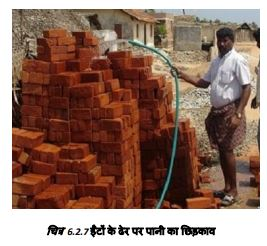
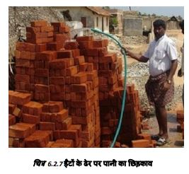

प्लिंथ स्तर से ऊपर की चिनाई
दीवारों की मोटाई डिजाइन पर निर्भर करती है। जहां ईंटें महंगी हैं लेकिन पत्थर उपलब्ध हैं, वहां तैयार किये हुए स्टोन कंक्रीट ब्लॉक, खोखले ब्लॉक, रफ कट पत्थर आदि का उपयोग चिनाई के रूप में किया जाता है। दीवारें इतनी मजबूत होनी चाहिए कि वे भार सहन कर सकें, नमी को रोक सकें और आग का प्रतिरोध कर सकें और अन्य प्राकृतिक गतिविधियों को सहन कर सकें। ईंटों/ब्लॉकों को सीमेंट और रेत का उपयोग करके जोड़ा जाना चाहिए। सभी दीवारों को भूकंप, चक्रवात, बाढ़ और आग आदि जैसे प्राकृतिक खतरों के कारण आने वाले अतिरिक्त भार को सहन करने के लिए डिजाइन किया जाना चाहिए।
1. चिनाई में ईंटों का उपयोग करने से एक दिन पहले, ईंटों को अच्छी तरह से भिगोने के लिए ढेर सारा
पानी छिड़कें।
2. चिनाई में उपयोग के लिए ईंटों को ढेर से बाहर निकालने से पहले फिर से पानी का छिड़काव करें।
सूखी ईंटें खराब गुणवत्ता और कम मजबूती वाली चिनाई देती हैं।
3. ईंटें आम तौर पर इंग्लिश बॉन्ड नामक पैटर्न में रखी जाती हैं। दीवार की मोटाई ईंट की एक लंबाई के
बराबर होती है जो इस्तेमाल की जा रही ईंट के प्रकार पर निर्भर करती है।

 

चरण 7: प्लिंथ बैंड के ऊपर चिनाई
घर को लंबवत और क्षैतिज रूप से बांधने के लिए, कोनों और जोड़ो पर खड़ी सरिये की छड़ें आरसीसी बैंड और दीवार के कोनों से बिना किसी रूकावट के गुजरती हैं।
प्लिंथ स्तर पर आरसीसी बैंड उपलब्ध कराने के कम से कम 36 घंटे (मौसम/तापमान के आधार पर) के बाद, दीवारों पर चिनाई शुरू की जा सकती है।
चिनाई और प्लिंथ बैंड को नम रखें ताकि यह कम से कम 28 दिनों तक सूखे नहीं।
प्लिंथ बैंड के ऊपर की चिनाई कम से कम 60 किग्राध्वर्ग सेमी ताकत के कंक्रीट ब्लॉकों में हो सकती है।
चरण 8: कंक्रीट ब्लॉक का उपयोग करके प्लिंथ स्तर से ऊपर चिनाई
प्लिंथ स्तर से ऊपर पत्थर की चिनाई का उपयोग न करना बेहतर है। यह न तो किफायती है और न ही सुरक्षित।
ठोस कंक्रीट ब्लॉक (आकार 300ग200ग150 mm वजन लगभग 18 किलोग्राम) जिसमें कम से कम 60 किलोग्राम/वर्ग सेमी की सहनशक्ति हो, बेहतर विकल्प है।
400ग200ग200mm आकार के खोखले कंक्रीट ब्लॉक जिनकी बाहरी दीवारें कम से कम 50mm मोटी हों और कम से कम 40mm मोटाई की दो खौखली दीवारें हों, जिनमें से प्रत्येक का वजन कम से कम 18 किलोग्राम हो, का उपयोग ढलान वाली सीजीआई शीट छत वाली एकल मंजिल वाली इमारतों में सीमेंट व रेत में किया जा सकता है।
बंद खौखले ब्लॉक बेहतर होते हैं क्योंकि चिनाई के दौरान मिश्रण खोखली जगह में नहीं गिरता।
चिनाई में 1:6 से हल्के मिश्रण का उपयोग न करें। भूकंप जोन 5 में 1:5 को प्राथमिकता दें।
ठोस कंक्रीट ब्लॉकों का उपयोग करते समय हमें कोनों पर ऊर्ध्वाधर सरियो को पास करने के लिए स्लॉट के साथ विशेष ब्लॉकों की आवश्यकता होती है।
दरवाजे के फ्रेम के बीच के होल्डफास्ट और खिड़की के फ्रेम के नीचे से जुड़े होल्डफास्ट भी आरसीसी सिल बैंड में जुड़े होते हैं (अगले पृष्ठ पर दिए गए चित्र को देखें)।
खड़े सरियो को पास करने के लिए कोनों और जंक्शनों पर एक स्लॅाटेड ब्लॉक का उपयोग करें, फिर बार के चारों ओर सीमेंट कंक्रीट भरें।
चरण 8: कंक्रीट ब्लॉक का उपयोग करके प्लिंथ स्तर से ऊपर चिनाई
आरसीसी सिल बैंड बिछाए जाने और सभी खिड़की के फ्रेम को सही जगह पर रख दिए जाने के कम से कम 36 घंटे बाद हम सिल लेवल से ऊपर चिनाई का काम शुरू कर सकते हैं।
जोन-बी में, 1:6 सीमेंट व रेत के मिश्रण में 200mm मोटी ठोस कंक्रीट ब्लॉक की दीवारें एक अच्छा विकल्प हैं।
लोड बियरिंग दीवारों में ब्लॉक का उपयोग न करें जब तक कि संपीड़न शक्ति कम से कम 60 किग्रा प्रतिवर्ग बउ न हो।
हम कोनों पर स्लॉटेड कंक्रीट ब्लॉक का उपयोग करके प्लिंथ स्तर से ऊपर चिनाई का काम जारी रखते हैं।
दरवाजे के फ्रेम के मध्य-होल्डफास्ट को आरसीसी सिल बैंड में फिट किया जाता है।
दरवाजे और खिड़की के फ्रेम के ऊर्ध्वाधर किनारों से जुड़े होल्डफास्ट को चिनाई के काम के साथ सीमेंट कंक्रीट के साथ दीवारों में फिट करें।
अगर दरवाजेध्खिड़की के फ्रेम बाद में लगाए जाते हैं, तो होल्डफास्ट ढीले हो सकते हैं। इस प्रकार फ्रेम दीवारों में दरवाजे और खिड़की के गैप को मजबूत नहीं कर पाएँगे।